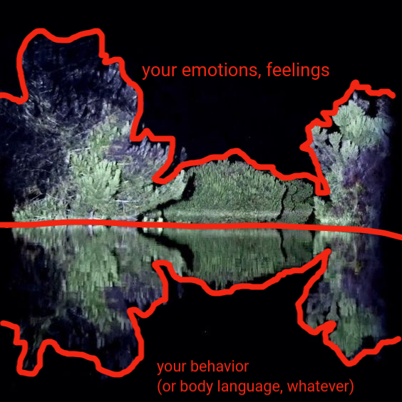

understanding how people works
To learn how we can 'hack people,' we need to first understand how our body and mind work together.
This section is a bit complex because we're talking about human beings - which implies that we also need to
understand that each person has unique and completely different characteristics.
I'm willing to write about techniques and principles that may not be officially established by contemporary
science because I strongly believe it's all about what actually gets the job done in real life. If people or
professionals have tested and are currently reaping the rewards through certain social engineering arts (which I
firmly think is a science), it's worth sharing them here.
mind and body are intrinsically connected
You might hear out there that these two actors are completely separate and disparate things, but rest assured
that over the years of evolution, we naturally created a two-way relationship between the body and the mind.
A interesting exercise for you to test this theory (clear your mind, don't expect anything, and don't practice
this with any pre-established emotion):
-
. clench your fists as if you're about to punch something;
-
. make an angry/hateful facial expression, furrow your eyebrows, and clench your jaw;
-
. take a deep breath, flaring your nostrils.
If you did everything correctly, you felt the emotion coming, adrenaline being released, and perhaps your heart
rate increased a bit - maybe imperceptibly.
Now, let's reverse engineering it (without pre-expressions):
- . just think about a situation where you felt deep hatred, relive it with as much detail as possible;
- . try to replicate the inner state from that moment. It's almost impossible to do this exercise while
laughing;
- . notice how the changes triggered by the pre-computed anger thoughts affect your facial and/or bodily
expressions (even if they're minimal).
you can practice this with any type of emotion; the results may be weaker
or stronger depending on how dedicated you are or the strength of the emotion you're trying to evoke.
try it for at least 60 seconds for noticeable results.
All of this is about figuring out how our body changes show what's going on in our heads - and vice versa. It's
pretty cool because it can be a handy rule of thumb for all of us. You can dive deep into some pretty specific
stuff, but there's a catch - those tiny changes don't always apply when you're dealing with every single person.
So, don't jump to conclusions without gathering as much information as possible; practice consistently, test,
gain experience, observe changes, and try to understand how they fit into the context of the other person. Learn
from these fundamental ideas and apply them in any suitable social situation. As a result, you'll start noticing
patterns in human behavior that are common to all of us - and this becomes a cycle of perpetual learning.
So, it's up to you what you'll do with this knowledge. Try to use it to become a better person (it'll make sense
further).
how get everything you want
empathy
The basis of social engineering is to make someone give you something that you want without them realizing the
manipulation required for it to occur. Individuals typically don't want to know the truth or face the reality of
things. They often prioritize security, personal affirmation, comfort, and whatever reinforces their current
beliefs. They agonize when facing the actual state of things - but we will talk about this later on. As long as
your idea is presented in a way adapted to the person's style, they will accept it, and you will gather the
benefits
through it.
Some brain chemicals, such as neuromodulators and neurotransmitters, are "triggered" in specific social
situations. As previously discussed, our body is one with our mind, and social engineering is like a domino
effect; once you achieve satisfactory states, the person simply opens up genuinely and gives you access to all
kinds of information. It is extremely crucial to say that this is not a constant process; there will be
failures, and you will need to identify which aspect of the other person you missed. Thus, you can build a more
solid foundation of empathy.
a process, not an event
Social interactions are so crucial to the point of having a neurological balance circuit – communicating and socializing are literally life necessities. I'm not saying it's impossible to live alone, without talking to anyone, isolated in a mountain. It can be done. However, the consequences that will follow will be painful, it's a direction contrary to nature. The body will try to compensate for this absence, for example, with an excess of cortisol and adrenaline – making the individual aggressive/irritated/anxious...not good at all.
intelligence speaks, but wisdom listens
The lack of control over thoughts is constantly triggering conflicting and unnecessary situations. The ability to not react is becoming increasingly difficult to build, given that we are bombarded with stimuli, making us impulsive and non-conscious of our actions.
One of the biggest psychological (and egoic) needs of humans is to be heard, to be 'seen' or noticed. We can view this characteristic as a gap to be exploited.
ps. the subject here isn't about right or wrong, bad or good. i'm talking about goals, not debating moral qualities. your body doesn't get those abstract words, it's a superficial thing.
facial expressions
It's not just about one factor, it never was about that. The human ability to gather massive amounts of information is often overlooked – but it makes sense, too, because we're not consciously doing this process alone. Most of it is computed by our more primitive mechanisms, by the structures that make our heart beat, our kidneys filter liquids, and you automatically read this now, etc...
These things are SO COMMON that we forget about the brain's capacity. They're such natural processes that you don't even notice
Our emotions arise from external stimuli, which produce thoughts, and consequently, generate feelings; we have a response to it, a biological signature. No matter how hard someone tries to manipulate, alter, or even conceal certain information – notice that it will be reflected in their behavior (and there are various analytical approaches to this, the most subtle changes occur in facial muscles and nerves).

universal recognition
There are, roughly (they mix and get different names), 6 types of generic facial expressions .
I'll put extreme images so we can understand the fixation patterns. Is necessary to practice in daily life, but with caution, don't go staring at others like a crazy maniac person.